Simple Parametric Tests
Theory
Welcome to our sixth practical experience in R. Throughout the following notes, I will introduce you to a couple of simple parametric test. Whilst parametric tests are used extremely often in biological statistics, they can be somewhat challenging to fit to your data as you will see soon. To do so, I will enlist the sparrow data set we handled in our first exercise. Additionally, todays seminar is showing plotting via base plot instead of ggplot2 to highlight the usefulness of base plot and show you the base notation.
I have prepared some Lecture Slides for this session.
Data
Find the data for this exercise here and here.
Preparing Our Procedure
To ensure others can reproduce our analysis we run the following three lines of code at the beginning of our R coding file.
rm(list=ls()) # clearing environment
Dir.Base <- getwd() # soft-coding our working directory
Dir.Data <- paste(Dir.Base, "Data", sep="/") # soft-coding our data directory
Packages
Using the following, user-defined function, we install/load all the necessary packages into our current R session.
# function to load packages and install them if they haven't been installed yet
install.load.package <- function(x) {
if (!require(x, character.only = TRUE))
install.packages(x)
require(x, character.only = TRUE)
}
package_vec <- c("car") # needed for the Levene Test for Homogeneity
sapply(package_vec, install.load.package)
## Loading required package: car
## Loading required package: carData
## car
## TRUE
Loading Data
During our first exercise (Data Mining and Data Handling - Fixing The Sparrow Data Set) we saved our clean data set as an RDS file. To load this, we use the readRDS() command that comes with base R.
Data_df_base <- readRDS(file = paste(Dir.Data, "/1 - Sparrow_Data_READY.rds", sep=""))
Data_df <- Data_df_base # duplicate and save initial data on a new object
t-Test (unpaired)
Assumptions of the unpaired t-Test:
- Predictor variable is binary
- Response variable is metric and normal distributed within their groups
- Variable values are independent (not paired)
In addition, test whether variance of response variable values in groups are equal (var.test()) and adjust t.test() argument var.equal accordingly.
Testing For Normality And Homogeneity
We need to test the distribution of our response variables within each predictor variable group for their normality and variance. Since this involves two Shapiro tests and one variance test per variable for each response variable, we might want to write our own function to do so:
ShapiroTest <- function(Variables, Grouping){
Output <- data.frame(x = Variables)
for(i in 1:length(Variables)){
X <- Data_df[,Variables[i]]
Levels <- levels(factor(Data_df[,Grouping]))
Output[i,2] <- shapiro.test(X[which(Data_df[,Grouping] == Levels[1])])$p.value
Output[i,3] <- shapiro.test(X[which(Data_df[,Grouping] == Levels[2])])$p.value
Output[i,4] <- var.test(x = X[which(Data_df[,Grouping] == Levels[1])],
y = X[which(Data_df[,Grouping] == Levels[2])])$p.value
}
colnames(Output) <- c("Variable", "P.value1", "P.value2", "Var.Test")
return(Output)
}
This function (ShapiroTest()) takes two arguments: (1) Variables - a vector of characters holding the names of the variables we want to have tested, and (2) Grouping - the binary variable by which to group our variables. The function returns a data frame holding the p-values of the Shapiro tests on each variable group values as well as the var.test() p-value.
Climate Warming/Extremes
Does sparrow morphology change depend on climate?
Using multiple different methods (i.e. Kruskal-Wallis and Mann-Whitney U Test), we have already identified climate (be it in its binary form or when recorded as a three-level variable) is a strong driving force of sparrow morphology. We expect the same results when using a t-Test.
Take note that we need to limit our analysis to our climate type testing sites again as follows (we include Manitoba this time as it is at the same latitude as the UK and Siberia and holds a semi-coastal climate type):
# prepare climate type testing data
Data_df <- Data_df_base
Index <- Data_df$Index
Rows <- which(Index == "SI" | Index == "UK" | Index == "RE" | Index == "AU" | Index == "MA")
Data_df <- Data_df[Rows,]
Testing for Normality and Variance
Before we can make use of our data with a t-Test, we need to do an assumption check. To this end, we first turn Climate records into a binary variable by turning records of a semi-coastal climate into a coastal one.
# Make climate binary
Data_df$Climate[which(Data_df$Climate == "Semi-Coastal")] <- "Coastal"
Data_df$Climate <- droplevels(factor(Data_df$Climate))
Let’s make sure our assumptions are met:
ShapiroTest(Variables = c("Weight", "Height", "Wing.Chord"), Grouping = "Climate")
## Variable P.value1 P.value2 Var.Test
## 1 Weight 0.1699442 0.2521182 0.326240416
## 2 Height 0.1676977 0.3645040 0.010632158
## 3 Wing.Chord 0.0538642 0.1722528 0.002942433
Luckily, all of our variables allow for the calculation of t-Test. Take note though that some need different specification of the var.equal argument than others.
Analyses
Sparrow Weight
Let’s start with the weight of Passer domesticus individuals as grouped by the climate type present at the site weights have been recorded at:
t.test(Data_df$Weight ~ Data_df$Climate, var.equal = TRUE)
##
## Two Sample t-test
##
## data: Data_df$Weight by Data_df$Climate
## t = -14.852, df = 381, p-value < 2.2e-16
## alternative hypothesis: true difference in means is not equal to 0
## 95 percent confidence interval:
## -2.428439 -1.860640
## sample estimates:
## mean in group Coastal mean in group Continental
## 31.23383 33.37837
According to our analysis, which has us reject the null hypothesis, we conclude that binary climate records are valuable information criteria for predicting sparrow weight with sparrows in coastal climates being lighter than sparrows in continental ones thus effectively varifying the results of our non-parametric approaches (Kruskal-Wallis, Mann-Whitney U).
Sparrow Height
Let’s move on to the height of Passer domesticus individuals as grouped by the climate type present at the site weights have been recorded at:
t.test(Data_df$Height ~ Data_df$Climate, var.equal = FALSE)
##
## Welch Two Sample t-test
##
## data: Data_df$Height by Data_df$Climate
## t = -0.27916, df = 365.69, p-value = 0.7803
## alternative hypothesis: true difference in means is not equal to 0
## 95 percent confidence interval:
## -0.2329126 0.1750052
## sample estimates:
## mean in group Coastal mean in group Continental
## 13.91670 13.94565
Confirming the results of our Mann-Whitney U Test, we accept the null hypothesis.
Sparrow Wing Chord
Lastly, we test the wing chords of Passer domesticus individuals as grouped by the climate type present at the site weights have been recorded at:
t.test(Data_df$Wing.Chord ~ Data_df$Climate, var.equal = FALSE)
##
## Welch Two Sample t-test
##
## data: Data_df$Wing.Chord by Data_df$Climate
## t = -0.12285, df = 370.22, p-value = 0.9023
## alternative hypothesis: true difference in means is not equal to 0
## 95 percent confidence interval:
## -0.03985039 0.03516377
## sample estimates:
## mean in group Coastal mean in group Continental
## 6.898696 6.901039
Without confirming the results of our Mann-Whitney U Test, we accept the null hypothesis.
Conclusion
Here’s what we’ve learned from the t-Test so far:
- Sparrow weight depends on (binary) climate types
- Sparrow height does not depend on (binary) climate types
- Sparrow wing chord does not depend on (binary) climate types
Let’s end this by viusalising all of the data:
par(mfrow=c(2,2))
plot(Data_df$Weight ~ Data_df$Climate)
plot(Data_df$Height ~ Data_df$Climate)
plot(Data_df$Wing.Chord ~ Data_df$Climate)
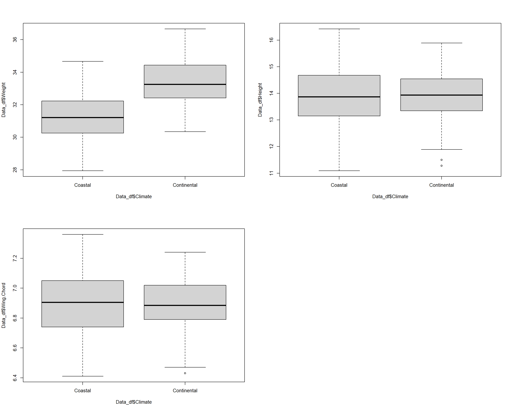
Sexual Dimorphism
Does sparrow morphology change depend on Sex?
Using the Mann-Whitney U Test, we have already identified the sex of Passer domesticus is a good information criterion for understanding sparrow weight but not sparrow height or wing chord. Let’s see if we can reproduce this using a t-Test approach.
We may wish to use the entirety of our data set again for this purpose:
Data_df <- Data_df_base
Testing for Normality and Variance
Again, before we can use our data in a t-Test for this purpose, we have to make sure that our assumptions are met. To this end, we can make use of our user defined ShapiroTest() function as follows:
ShapiroTest(Variables = c("Weight", "Height", "Wing.Chord"), Grouping = "Sex")
## Variable P.value1 P.value2 Var.Test
## 1 Weight 2.878769e-21 1.744517e-21 0.7475085
## 2 Height 4.028475e-17 6.600273e-19 0.4006799
## 3 Wing.Chord 3.438104e-25 1.628147e-26 0.5554935
As it turns out, our data does not allow for any t-Test (this happens often in real studies). However, we can create sex-driven subgroups within each site and test whether these meet the requirements for our t-Test. This is out of the scope of this course though and so we will skip it. Spoler alert: I have done this and the findings did not reveal anything we didn’t uncover so far.
t-Test (paired)
Assumptions of the paired t-Test:
- Predictor variable is binary
- Response variable is metric
- Difference of response variable pairs is normal distributed
- Variable values are dependent (paired)
Preparing Data
For this purpose, we need an additional data set with truly paired records of sparrows and so we implement the same solution as we’ve used within our fourth seminar using the Wilcoxon Signed Rank Test. Within our study set-up, think of a resettling experiment, were you take Passer domesticus individuals from one site, transfer them to another and check back with them after some time has passed to see whether some of their characteristics have changed in their expression.
To this end, presume we have taken the entire Passer domesticus population found at our Siberian research station and moved them to the United Kingdom. Whilst this keeps the latitude stable, the sparrows now experience a coastal climate instead of a continental one. After some time (let’s say: a year), we have come back and recorded all the characteristics for the same individuals again.
You will find the corresponding new data in 2b - Sparrow_ResettledSIUK_READY.rds. Take note that this set only contains records for the transferred individuals in the same order as in the old data set.
Data_df_Resettled <- readRDS(file = paste(Dir.Data, "/2b - Sparrow_ResettledSIUK_READY.rds", sep=""))
Since earlier analysis such as the Wilcoxon Signed Rank test (fourth practical) and the Friedman Test (fifth practical) showed that height and wing chord records do not change when sparrows are resettled at all, we have excluded these here and focus solely on sparrow weight.
Testing for Normality
Before being able to run our paired t-Test, we must make sure that the difference of response variable pairs is normal distributed. We can do so using the shapiro.test() of base R as follows:
# selecting pre-resettling weights
DataSI <- Data_df$Weight[which(Data_df$Index == "SI")]
# calculating difference of before and after resettling weights
WeightDiff <- DataSI-Data_df_Resettled$Weight
# shapiro test
shapiro.test(WeightDiff)
##
## Shapiro-Wilk normality test
##
## data: WeightDiff
## W = 0.97361, p-value = 0.1716
Thankfully, the assumption of normality is met.
Now let’s visualise that using a qqplot:
qqnorm(WeightDiff)
qqline(WeightDiff)
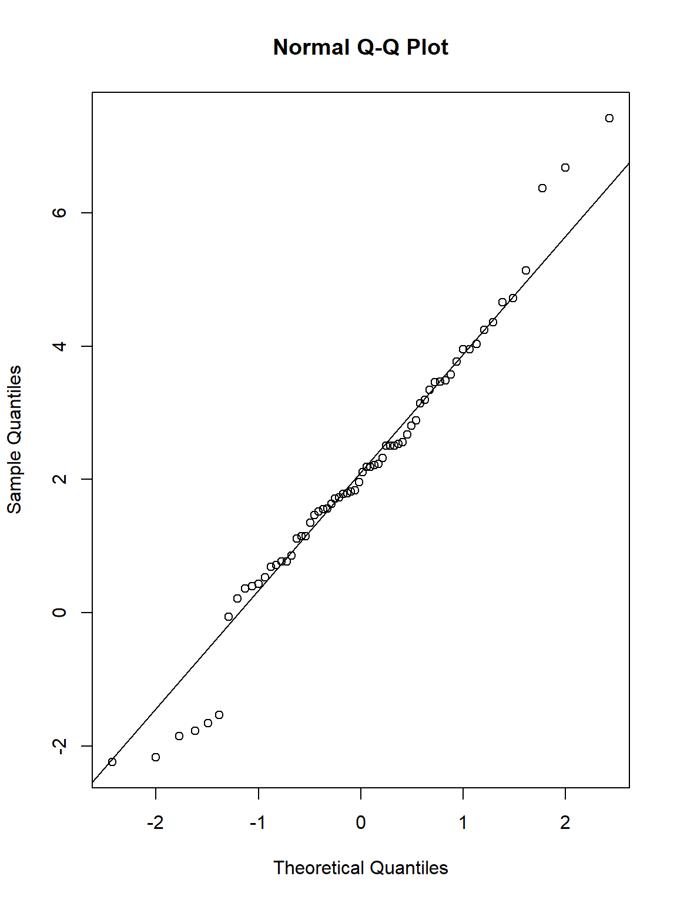
Climate Warming/Extremes
Does sparrow morphology change depend on climate?
Now let’s go on to test whether sparrow weights change significantly per individual due to our relocation experiment (we expect this from future test in our practicals):
t.test(DataSI, Data_df_Resettled$Weight, paired = TRUE)
##
## Paired t-test
##
## data: DataSI and Data_df_Resettled$Weight
## t = 8.4762, df = 65, p-value = 4.17e-12
## alternative hypothesis: true difference in means is not equal to 0
## 95 percent confidence interval:
## 1.583629 2.559914
## sample estimates:
## mean of the differences
## 2.071771
We were right, individual sparrow weights change significantly after our relocation experiment and we reject the null hypothesis. This is in accordance with the results of the Wilcoxon Signed Rank Test as well as the Friedman Test.
Let’s go on to visualise our data to make better sense of what is going on here:
# Select the sparrow weights
Weights <- c(DataSI, Data_df_Resettled$Weight)
# Select the sites
Sites <- factor(rep(c("SI", "SI_UK"), each = length(DataSI)))
# Plot
plot(Weights ~ Sites)
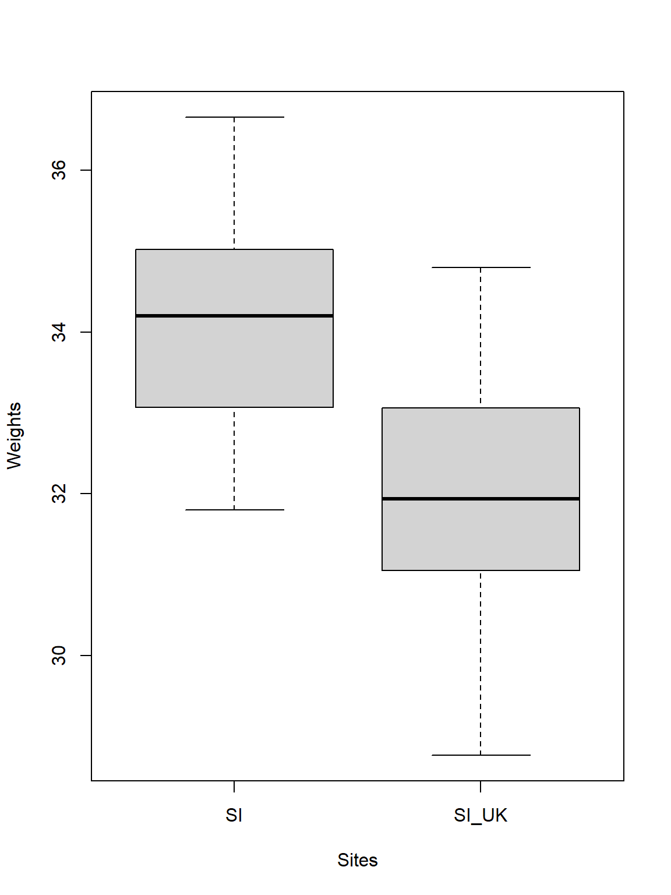
Quite obviously sparrows observed in Siberia are heavier than when they are resettled to the United Kingdom (this may be due to the more forgiving climate in the UK). Just like the test stated, the difference of the average weights is roughly 2g between the sparrows at the two sites.
One-Way ANOVA
Assumptions of the One-Way ANOVA:
- Predictor variable is categorical
- Response variable is metric
- Response variable residuals are normal distributed
- Variance of populations/samples are equal (homogeneity)
- Variable values are independent (not paired)
Testing For Assumptions
Firstly, we need to test the assumptions of our One-Way ANOVA. For this purpose, we write another user-defined function.
# User-defined function
ANOVACheck <- function(Variables, Grouping, data, plotting){
Output <- data.frame(x = NA)
for(i in 1:length(Variables)){
# data
Y <- as.numeric(factor(data[,Variables[i]]))
X <- data[,Grouping]
Levels <- levels(factor(Data_df[,Grouping]))
# Residuals?
model <- lm(Y ~ X)
Output[1,i] <- shapiro.test(residuals(model))$p.value
# Homgeneity?
Levene <- leveneTest(Y ~ X,
center = median,
data = data)
Output[2,i] <- Levene[1,3]
# Plotting
if(plotting == TRUE){
plot(model, 2)# Normality
plot(model, 3)# Homogeneity
}
}
colnames(Output) <- Variables
rownames(Output) <- c("Residual Normality", "Homogeneity of Variances")
return(Output)
}
This ANOVACheck() function takes four arguments: (1) Variables - a vector of characters holding the names of the variables we want to have tested, (2) Grouping - the categorical variable by which to group our variables, (3) data - the data frame which contains the Variables and the Grouping factor, and (4) plotting - a logical indicator of whether to produce plots visualising the test results or not.
The function returns a data frames containing the p-values indexing whether to accept or reject the notion of the normality of residuals per variable (Residual Normality), and the p-values indexing whether variances between groups are homogeneous or not (Homogeneity of Variances).
Climate Warming/Extremes
Does sparrow morphology change depend on climate?
Using the Kruskal-Wallis Test in our last exercise, we already identified climate to be an important factor in determining Passer domesticus morphology. Let’s see if this holds true.
Take note that we need to limit our analysis to our climate type testing sites again as follows (we include Manitoba this time as it is at the same latitude as the UK and Siberia and holds a semi-coastal climate type):
# prepare climate type testing data
Data_df <- Data_df_base
Index <- Data_df$Index
Rows <- which(Index == "SI" | Index == "UK" | Index == "RE" | Index == "AU" | Index == "MA")
Data_df <- Data_df[Rows,]
Assumption Check
Let’s use the ANOVACheck() function on our data:
par(mfrow=c(3,2))
ANOVACheck(Variables = c("Weight", "Height", "Wing.Chord"), Grouping = "Climate", data = Data_df, plotting = TRUE)
## Warning in leveneTest.default(y = y, group = group, ...): group coerced to
## factor.
## Warning in leveneTest.default(y = y, group = group, ...): group coerced to
## factor.
## Warning in leveneTest.default(y = y, group = group, ...): group coerced to
## factor.
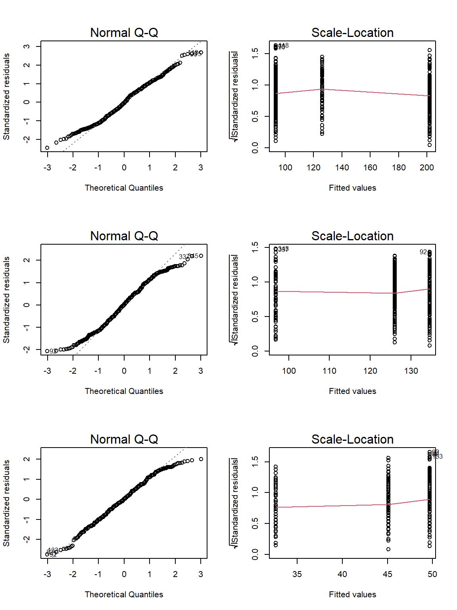
## Weight Height Wing.Chord
## Residual Normality 0.002521771 2.671414e-05 0.001685579
## Homogeneity of Variances 0.110120912 1.896577e-01 0.013575440
Unfortunately, neither weight nor wing chord records fullfil our requirements.
Analysis
Let’s run our analysis for height as grouped by the three-level climate variable:
model <- lm(Data_df$Height ~ Data_df$Climate)
anova(model)
## Analysis of Variance Table
##
## Response: Data_df$Height
## Df Sum Sq Mean Sq F value Pr(>F)
## Data_df$Climate 2 14.99 7.4942 7.2494 0.0008129 ***
## Residuals 381 393.87 1.0338
## ---
## Signif. codes: 0 '***' 0.001 '**' 0.01 '*' 0.05 '.' 0.1 ' ' 1
According to this, climate is a meaningful predictor of height of sparrows and we reject the null hypothesis thus confirming the results of our Kruskall-Wallis analysis.
Now, let’s analyse the output a bit more in-depth:
summary(model)
##
## Call:
## lm(formula = Data_df$Height ~ Data_df$Climate)
##
## Residuals:
## Min 1Q Median 3Q Max
## -2.98994 -0.69815 -0.01475 0.67142 2.37045
##
## Coefficients:
## Estimate Std. Error t value Pr(>|t|)
## (Intercept) 14.07994 0.07964 176.800 < 2e-16 ***
## Data_df$ClimateContinental -0.13429 0.11426 -1.175 0.24060
## Data_df$ClimateSemi-Coastal -0.56039 0.14755 -3.798 0.00017 ***
## ---
## Signif. codes: 0 '***' 0.001 '**' 0.01 '*' 0.05 '.' 0.1 ' ' 1
##
## Residual standard error: 1.017 on 381 degrees of freedom
## Multiple R-squared: 0.03666, Adjusted R-squared: 0.0316
## F-statistic: 7.249 on 2 and 381 DF, p-value: 0.0008129
- The mean sparrow height in coastal climates is 14.0799387cm (this is our Intercept/Baseline)
- The mean sparrow height in continental climates is -0.1342893cm bigger than the Intercept
- The mean sparrow height in semi-coastal climates is -0.5603864cm bigger than the Intercept
- Only the estimates in coastal and semi-coastal climates are statistically significant
Personally, I would not place too much confidence in these results due to a couple of reasons:
- Our only semi-coastal site is on the northern hemisphere whereas two of our stations are located in the southern hemisphere
- Confounding factors such as population status might have an effect which we are not considering here
Let’s end this by plotting all of our data:
par(mfrow=c(2,2))
plot(Data_df$Weight ~ factor(Data_df$Climate))
plot(Data_df$Height ~ factor(Data_df$Climate))
plot(Data_df$Wing.Chord ~ factor(Data_df$Climate))
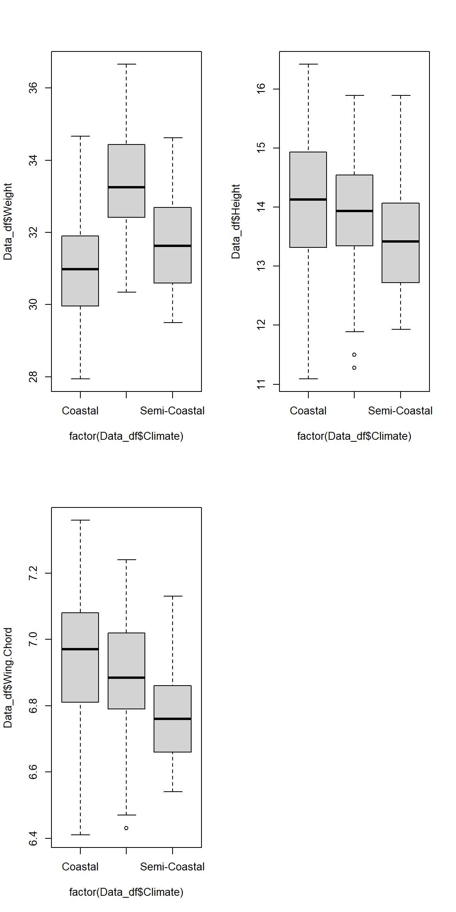
As you can see, the variances are definitely not equal between our groups which explains why part of our assumption test failed.
Predation
Does nesting height depend on predator characteristics?
Again, using the Kruskal-Wallis Test in our last exercise, we already identified predator characteristics to be an important factor in determining Passer domesticus nesting height. Let’s see if this holds true.
We may wish to use the entirety of our data set again for this purpose:
Data_df <- Data_df_base
Assumption Check
Let’s use our ANOVACeck() function to test whether we can run our analysis. Before we can do so, however, we need to slightly adjust our predator type variable just like we did in our last exercise and as follows:
# changing levels in predator type
levels(Data_df$Predator.Type) <- c(levels(Data_df$Predator.Type), "None")
Data_df$Predator.Type[which(is.na(Data_df$Predator.Type))] <- "None"
# Assumption Check
par(mfrow=c(1,2))
ANOVACheck(Variables = "Nesting.Height", Grouping = "Predator.Type", data = Data_df, plotting = TRUE)
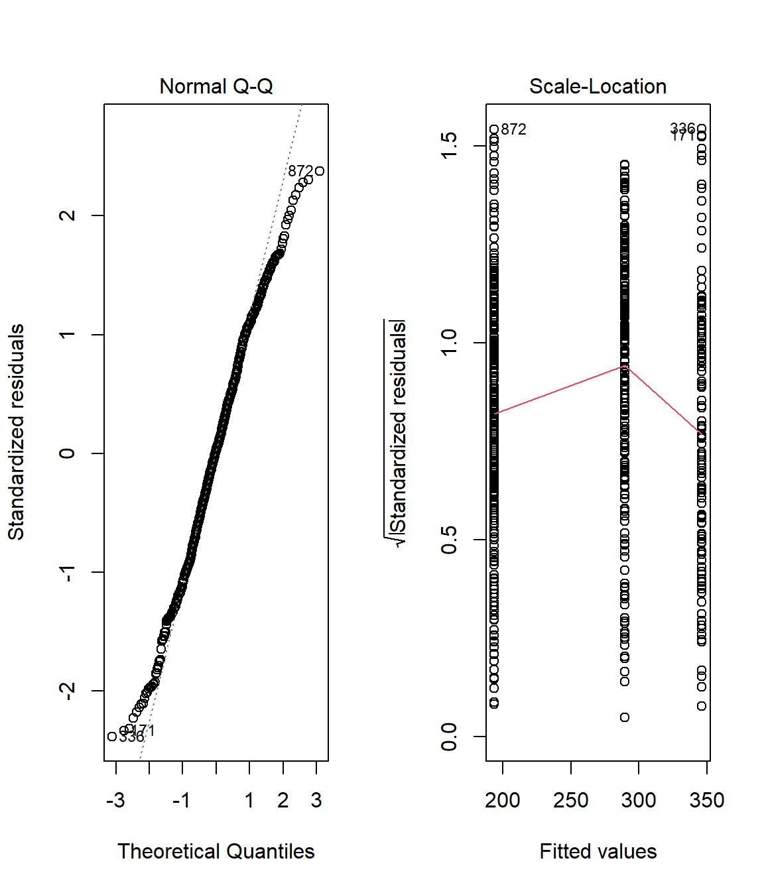
## Nesting.Height
## Residual Normality 0.0017160318
## Homogeneity of Variances 0.0005845899
Again, our data fails the assumption check. The residuals are definitely not normal distributed and the variance of nesting height records within our groups are not equal.
Analysis
Since none of our assumptions are met, we cannot run an ANOVA and therefore resort to data visualisation alone:
plot(Data_df$Nesting.Height ~ Data_df$Predator.Type)
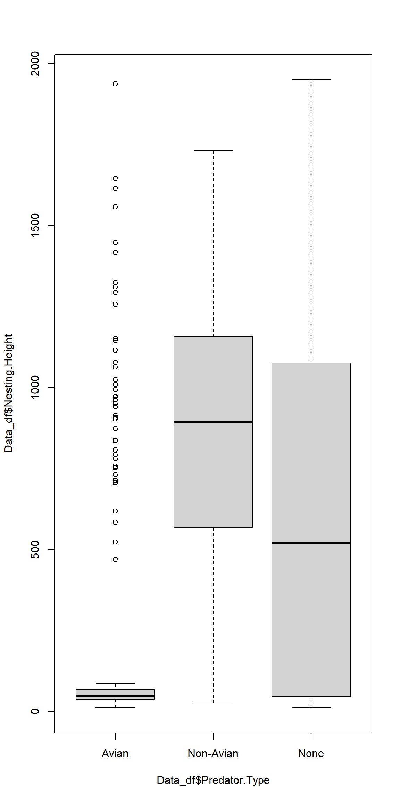 Once more, we can see why our homogeneity of variances test failed.
Two-Way ANOVA
Assumptions of the Two-Way ANOVA:
- Predictor variables are categorical
- Response variable is metric
- Response variable residuals are normal distributed
- Variance of populations/samples are equal (homogeneity)
- Variable values are independent (not paired)
Testing For Assumptions
Yet again, we need to check if our assumptions are met first. Automating this procedure is definitely a good idea and only needs slight modification from our ANOVACheck() function.
# User-defined function
ANOVACheck_TWO <- function(Formulas, data, plotting){
Output <- data.frame(x = NA)
for(i in 1:length(Formulas)){
# Check how many formulas there are
if(length(Formulas) == 1){
Expression <- Formulas[[1]]
}else{
Expression <- Formulas[[i]]
}
# Residuals?
model <- lm(formula = Expression, data = data)
Output[1,i] <- shapiro.test(residuals(model))$p.value
# Homgeneity?
Levene <- leveneTest(Expression,
center = median,
data = data)
Output[2,i] <- Levene[1,3]
# Plotting
if(plotting == TRUE){
plot(model, 2)# Normality
plot(model, 3)# Homogeneity
}
}
colnames(Output) <- as.character(Formulas)
rownames(Output) <- c("RN", "HoV")
return(Output)
}
This ANOVACheck_TWO() function takes four arguments: (1) Formulas - a vector of formula specification for our ANOVA models we want to have tested, (2) data - the data frame which contains the variables and the grouping factor called upon in our Formulas, and (3) plotting - a logical indicator of whether to produce plots visualising the test results or not.
The function returns a data frames containing the p-values indexing whether to accept or reject the notion of the normality of residuals per variable (RN), and the p-values indexing whether variances between groups are homogeneous or not (HoV).
Sexual Dimorphism
Does sparrow morphology depend on population status and sex?
Given different factors affecting invasive species, we might expect different patterns of sexual dimorphism for invasive and native populations. Take note that we keep using the northern hemisphere subset our cimate testing sites as these present us with a nice set of invasive/native population records already whilst keeping confounding factors to a minimum.
Assumption Check
First, we need to check our assumptions:
# prepare climate type testing data
Data_df <- Data_df_base
Index <- Data_df$Index
Rows <- which(Index == "SI" | Index == "UK" | Index == "MA")
Data_df <- Data_df[Rows,]
# analysis
par(mfrow=c(3,2))
ANOVACheck_TWO(Formulas = c(Weight ~ Population.Status*Sex,
Height ~ Population.Status*Sex,
Wing.Chord ~ Population.Status*Sex)
, data = Data_df, plotting = TRUE)
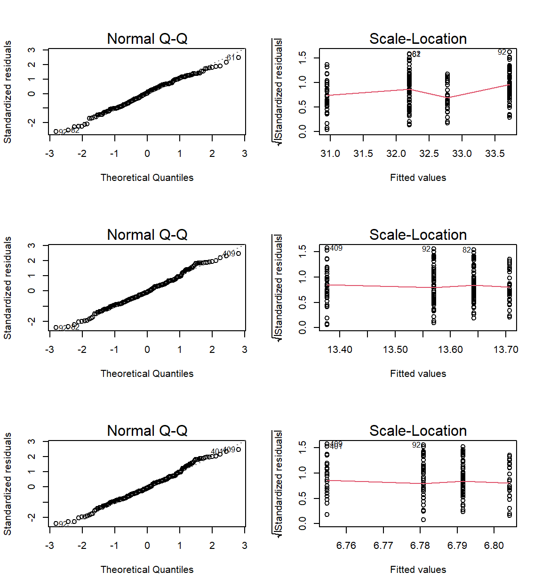
## Weight ~ Population.Status * Sex Height ~ Population.Status * Sex
## RN 0.287959531 0.2171916
## HoV 0.004492103 0.9057774
## Wing.Chord ~ Population.Status * Sex
## RN 0.1907782
## HoV 0.9174340
Again our assumptions are not met except for sparrow height and wing chord as a product of sex and population status.
Analysis
Let’s run our analysis:
# height model
model <- lm(Height ~ Population.Status*Sex, data = Data_df)
anova(model)
## Analysis of Variance Table
##
## Response: Height
## Df Sum Sq Mean Sq F value Pr(>F)
## Population.Status 1 0.338 0.33820 0.3190 0.5729
## Sex 1 0.179 0.17896 0.1688 0.6816
## Population.Status:Sex 1 1.786 1.78585 1.6844 0.1959
## Residuals 197 208.865 1.06023
# wing chord model
model <- lm(Wing.Chord ~ Population.Status*Sex, data = Data_df)
anova(model)
## Analysis of Variance Table
##
## Response: Wing.Chord
## Df Sum Sq Mean Sq F value Pr(>F)
## Population.Status 1 0.0047 0.004669 0.1955 0.6589
## Sex 1 0.0041 0.004125 0.1727 0.6782
## Population.Status:Sex 1 0.0399 0.039856 1.6688 0.1979
## Residuals 197 4.7049 0.023883
# plotting
par(mfrow=c(1,2))
boxplot(Height ~ Population.Status*Sex, data = Data_df, col = c("blue", "red"))
boxplot(Wing.Chord ~ Population.Status*Sex, data = Data_df, col = c("blue", "red"))
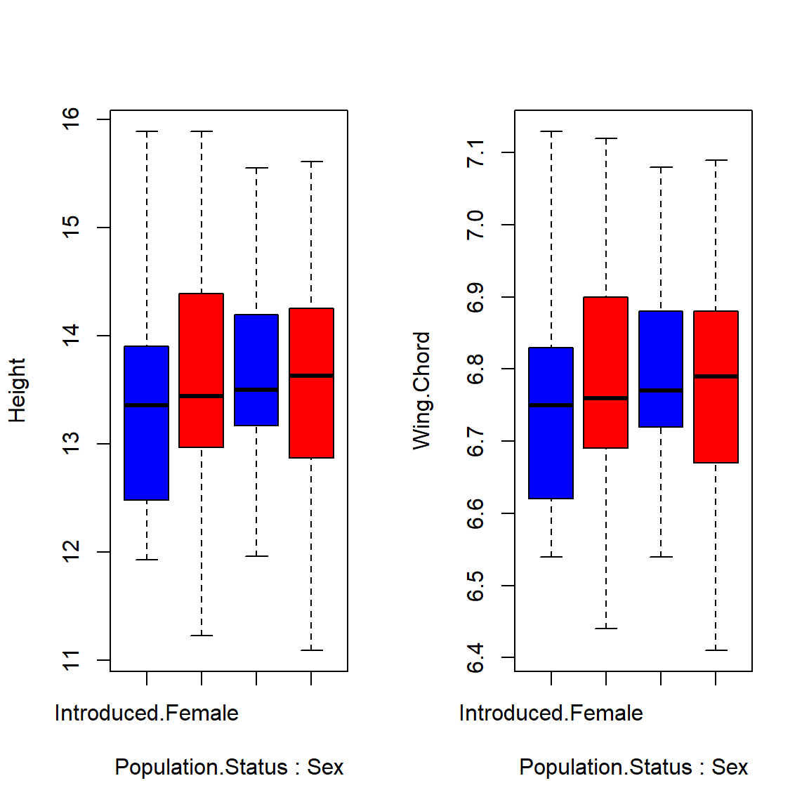 As it turns out, population status and sex are no viable predictors for sparrow height or wing chord and so we accept the null hypothesis.
ANCOVA
Assumptions of the ANCOVA:
- Predictor variables are categorical or continuous
- Response variable is metric
- Response variable residuals are normal distributed
- Variance of populations/samples are equal (homogeneity)
- Variable values are independent (not paired)
- Relationship between the response and covariate is linear.
Climate Warming/Extremes
Do sparrow characteristics depend on climate and latitude?
Latitude may have masked some effects of climate on sparrow morphology in our preceding analyses and vice-versa. At times, we have been able to account for this by including our site records, which can be seen as binned versions of latitude records. Let’s test if the inclusion of raw latitude records are meaningful.
Assumption Check
Again, we need to do an assumption check. However, we need a new function for this, since we now need to test whether our response variable and the covariate are linear or not:
# overwriting prior changes in Data_df
Data_df <- Data_df_base
Data_df$Latitude <- abs(Data_df$Latitude)
# User-defined function
ANCOVACheck <- function(Variables, Grouping, Covariate, data, plotting){
Output <- data.frame(x = NA)
for(i in 1:length(Variables)){
# data
Y <- as.numeric(factor(data[,Variables[i]]))
X <- factor(data[,Grouping])
Z <- data[, Covariate]
# Residuals?
model <- lm(Y ~ X*Z)
Output[1,i] <- shapiro.test(residuals(model))$p.value
# Homgeneity?
Levene <- leveneTest(Y ~ X,
center = median,
data = data)
Output[2,i] <- Levene[1,3]
# Plotting
if(plotting == TRUE){
plot(model, 1)# Linearity
plot(model, 2)# Normality
plot(model, 3)# Homogeneity
}
}
colnames(Output) <- Variables
rownames(Output) <- c("RN", "HoV")
return(Output)
}
This ANCOVACheck() function takes five arguments: (1) Variables - a vector of response variables used in our models, (2) Grouping - the categorical variable by which to group our variables, (3) Covariate - the covariate of our analysis, (4)data - the data frame which contains the variables, the grouping factor and our covariate, and (5) plotting - a logical indicator of whether to produce plots visualising the test results or not.
The function returns a data frames containing the p-values indexing whether to accept or reject the notion of the normality of residuals per variable (RN), and the p-values indexing whether variances between groups are homogeneous or not (HoV).
ANCOVACheck(Variables = c("Weight", "Height", "Wing.Chord", "Nesting.Height", "Egg.Weight", "Number.of.Eggs", "Home.Range"),
Grouping = "Climate", Covariate = "Latitude",
data = Data_df, plotting = FALSE)
## Weight Height Wing.Chord Nesting.Height Egg.Weight
## RN 2.082300e-02 1.502944e-04 4.535941e-07 5.190971e-06 2.943560e-03
## HoV 9.937376e-24 1.929783e-22 1.561040e-33 2.004612e-01 4.816355e-09
## Number.of.Eggs Home.Range
## RN 1.809197e-09 3.629841e-20
## HoV 2.750100e-14 1.157673e-08
The assumptions aren’t met. I have set the plotting argument to FALSE tu suppress the plotting of model checking visualisation. The would be useful to judge linearity but not necessary here since the other two important assumptions (Homogeneity of variances and Normality of residuals) aren’t met to begin with.
Analysis
Since none of our assumptions are met, we cannot run an ANOVA and therefore resort to data visualisation alone. We need a new function for this to do our plotting easily and automatically with some colours indicating our grouping factors whilst plotting response variables versus covariates.
PlotAncovas <- function(Variables, Grouping, Covariate, data){
for(i in 1:length(Variables)){
Y <- Data_df[,Variables[i]]
if(class(Y) == "character"){Y <- factor(Y)}
X <- Data_df[,Covariate]
G <- factor(Data_df[, Grouping])
plot(X, Y, col = G, xlab = Covariate, ylab = Variables[i])
legend("top", # place legend at the top
inset = -0.35, # move legend away from plot centre
xpd = TRUE, # allow legend outside of plot area
legend=levels(G), # what to include in legend
bg = "white", col = unique(G), ncol=length(levels(G)), # colours
pch = 1, # plotting symbols
title = Variables[i] # title of legend
)
}
}
The PlotAncovas() returns a scatter plot and takes four arguments: (1) Variables - a vector of response variables, (2) Grouping - the name of the grouping factor according to which to colour the symbols in our plot, (3) Covariate - the covariate against which to plot individuals variables, and (4) data - the data frame which holds our variables.
Let’s use our function:
par(mfrow=c(1,2))
PlotAncovas(Variables = c("Weight", "Height", "Wing.Chord", "Nesting.Height", "Egg.Weight", "Number.of.Eggs", "Home.Range"), Grouping = "Climate", Covariate = "Latitude", data = Data_df)
I will not interpret these plots here in text and leave this to you.
Take note that this could’ve been achieved much easier with ggplot2!
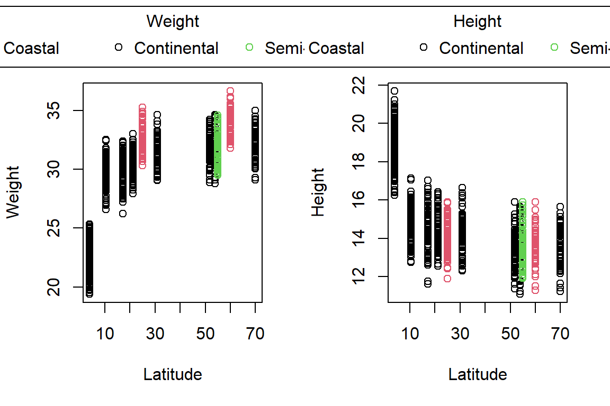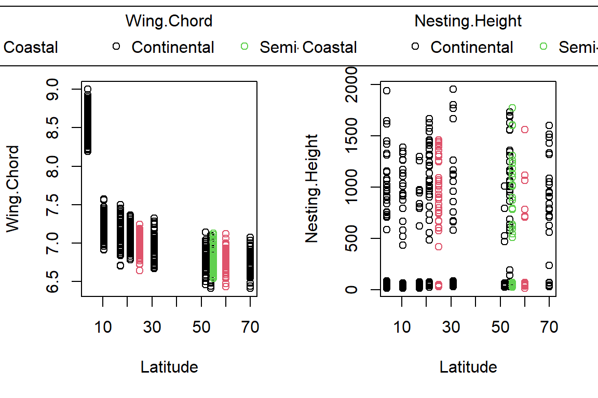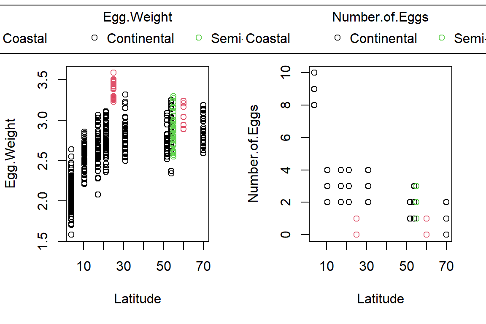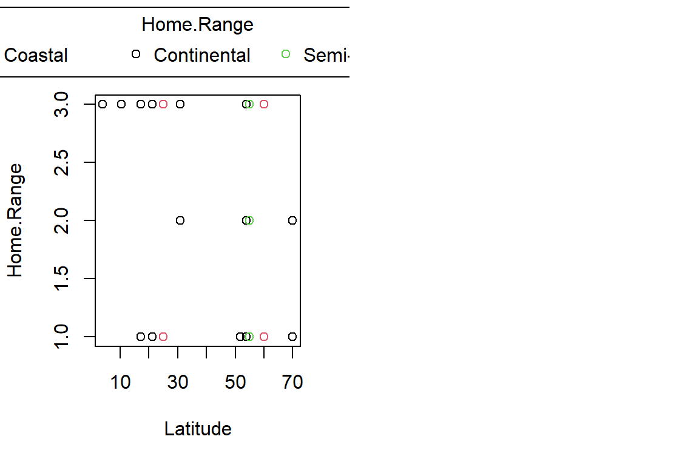
Sparrow Characteristics And Sites
This was not part of what we set out to do according to the lecture slides but has been included as a logical conclusion to an earlier analysis.
Unfortunately, our previous attempt at an ANCOVA didn’t work. So what other covariate do we have available for sparrow characteristics?
- Latitude doesn’t make sense to include when grouping by site index as these two are synonymous
- Longitude doesn’t make sense to include when grouping by site index as these two are synonymous
- Weight is well explained by other variables and we know the causal links
- Height is not that well explained by other variables
- Wing.Chord is not that well explained by other variables
Of course, there are more within our data set but it has become apparent that Weight may make for an important covariate in our site-wise ANCOVA set-up. Using the Pearson correlation (third practical), we already identified a causal link between sparrow Weight and Height per site.
Assumption Check
Firstly, we test whether assumptions are met. For brevities sake, we only test four variables:
par(mfrow=c(1,3))
ANCOVACheck(Variables = c("Height", "Wing.Chord", "Egg.Weight", "Number.of.Eggs"), Grouping = "Index", Covariate = "Weight", data = Data_df, plotting = TRUE)
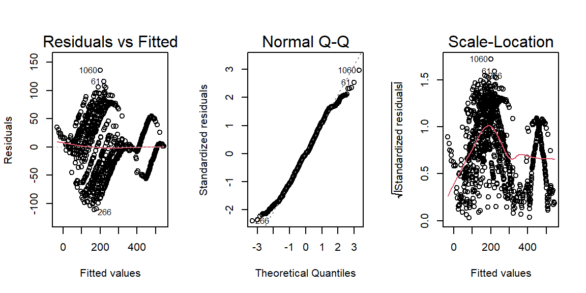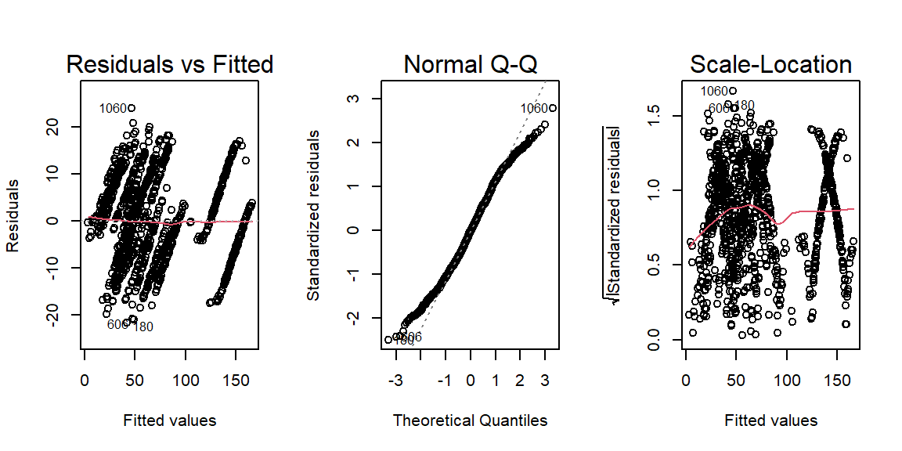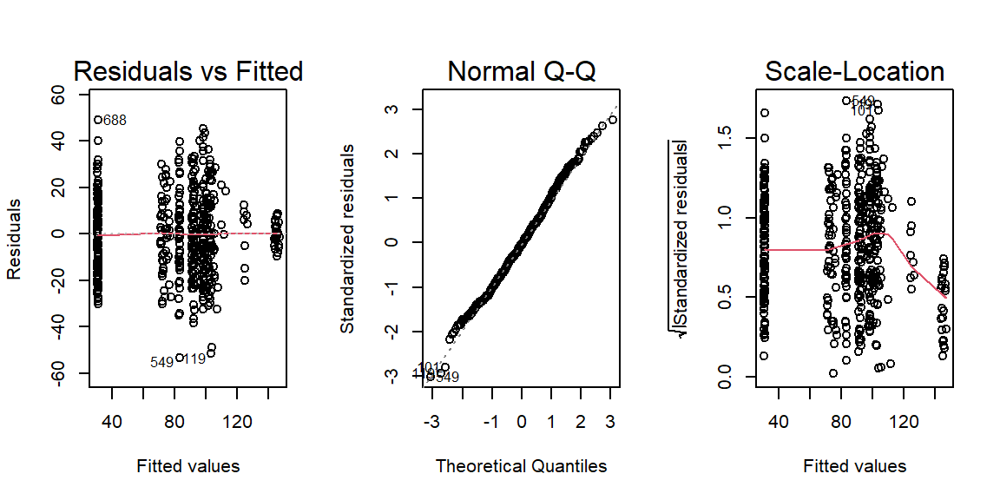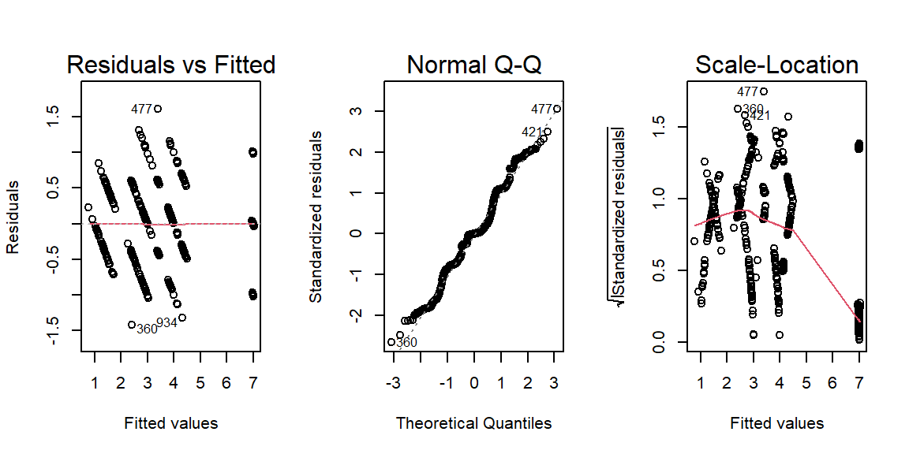
## Height Wing.Chord Egg.Weight Number.of.Eggs
## RN 1.499909e-06 5.251393e-08 0.1565038171 9.220862e-07
## HoV 3.594021e-13 2.434880e-01 0.0002015813 2.660146e-02
As it turns out, we can run our ANCOVA on Egg.Weight when grouped by site Index and driven by Weight.
Analysis
First, let’s visualise our data:
PlotAncovas(Variables = "Egg.Weight", Grouping = "Index", Covariate = "Weight", data = Data_df)
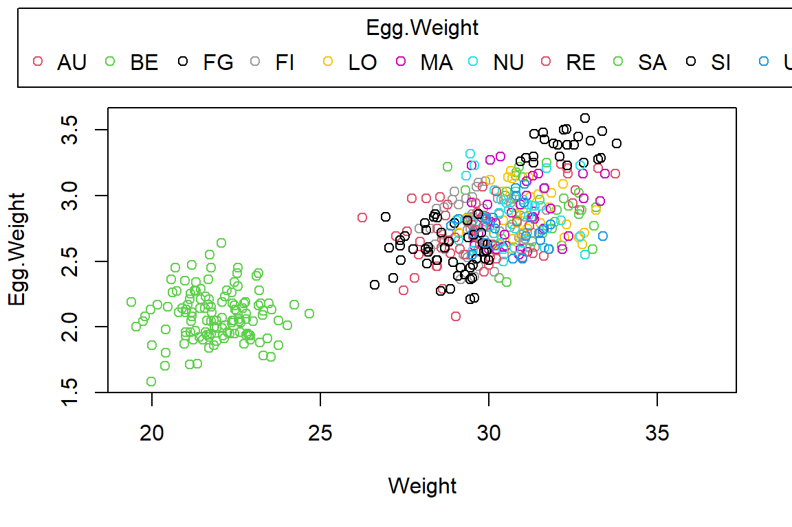
Quite obviously, Belize (BE) records are very different from the other stations, whose egg weight and weight records are grouped together. There seems to be some evidence for an overall linkage of sparrow weight and egg weight (a positive correlation).
Now we run the analysis:
LM_fit5 <- lm(Egg.Weight ~ Weight*Index, data = Data_df)
anova(LM_fit5)
## Analysis of Variance Table
##
## Response: Egg.Weight
## Df Sum Sq Mean Sq F value Pr(>F)
## Weight 1 52.531 52.531 1442.5616 <2e-16 ***
## Index 10 8.087 0.809 22.2064 <2e-16 ***
## Weight:Index 10 0.129 0.013 0.3536 0.9653
## Residuals 455 16.569 0.036
## ---
## Signif. codes: 0 '***' 0.001 '**' 0.01 '*' 0.05 '.' 0.1 ' ' 1
The above ANCOVA output tells us that there is no interaction effect between sites and sparrow weights when determining mean egg weight per nest of Passer domesticus and so we do another iteration of our model and remove the postulated interaction:
LM_fit6 <- lm(Egg.Weight ~ Weight+Index, data = Data_df)
anova(LM_fit6)
## Analysis of Variance Table
##
## Response: Egg.Weight
## Df Sum Sq Mean Sq F value Pr(>F)
## Weight 1 52.531 52.531 1462.898 < 2.2e-16 ***
## Index 10 8.087 0.809 22.519 < 2.2e-16 ***
## Residuals 465 16.698 0.036
## ---
## Signif. codes: 0 '***' 0.001 '**' 0.01 '*' 0.05 '.' 0.1 ' ' 1
By now, all of our model coefficients are significant and we can go on to interpret them:
summary(LM_fit6)
##
## Call:
## lm(formula = Egg.Weight ~ Weight + Index, data = Data_df)
##
## Residuals:
## Min 1Q Median 3Q Max
## -0.58887 -0.13146 -0.00621 0.12033 0.55135
##
## Coefficients:
## Estimate Std. Error t value Pr(>|t|)
## (Intercept) 3.345984 0.280826 11.915 < 2e-16 ***
## Weight 0.001081 0.008614 0.125 0.900203
## IndexBE -0.708478 0.054864 -12.913 < 2e-16 ***
## IndexFG -1.281168 0.099135 -12.923 < 2e-16 ***
## IndexFI -0.625287 0.057442 -10.885 < 2e-16 ***
## IndexLO -0.550137 0.051754 -10.630 < 2e-16 ***
## IndexMA -0.513645 0.051352 -10.003 < 2e-16 ***
## IndexNU -0.517015 0.053365 -9.688 < 2e-16 ***
## IndexRE -0.612632 0.051418 -11.915 < 2e-16 ***
## IndexSA -0.806045 0.056685 -14.220 < 2e-16 ***
## IndexSI -0.272580 0.077868 -3.501 0.000509 ***
## IndexUK -0.511667 0.051404 -9.954 < 2e-16 ***
## ---
## Signif. codes: 0 '***' 0.001 '**' 0.01 '*' 0.05 '.' 0.1 ' ' 1
##
## Residual standard error: 0.1895 on 465 degrees of freedom
## (590 observations deleted due to missingness)
## Multiple R-squared: 0.784, Adjusted R-squared: 0.7789
## F-statistic: 153.5 on 11 and 465 DF, p-value: < 2.2e-16